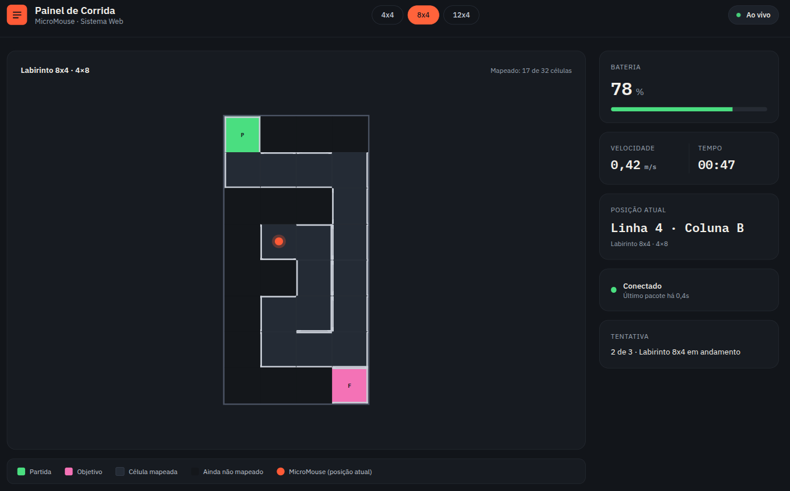
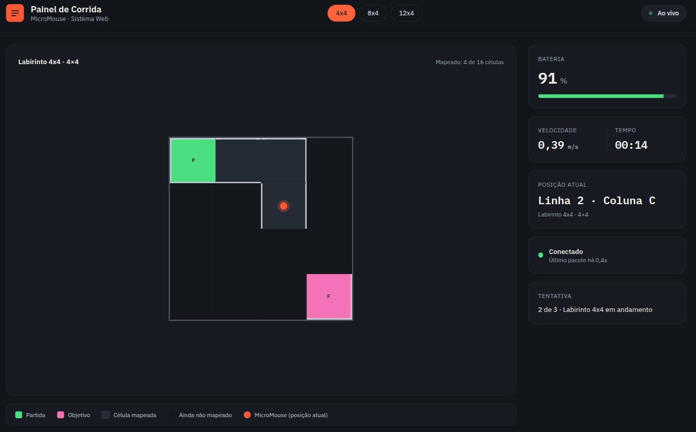
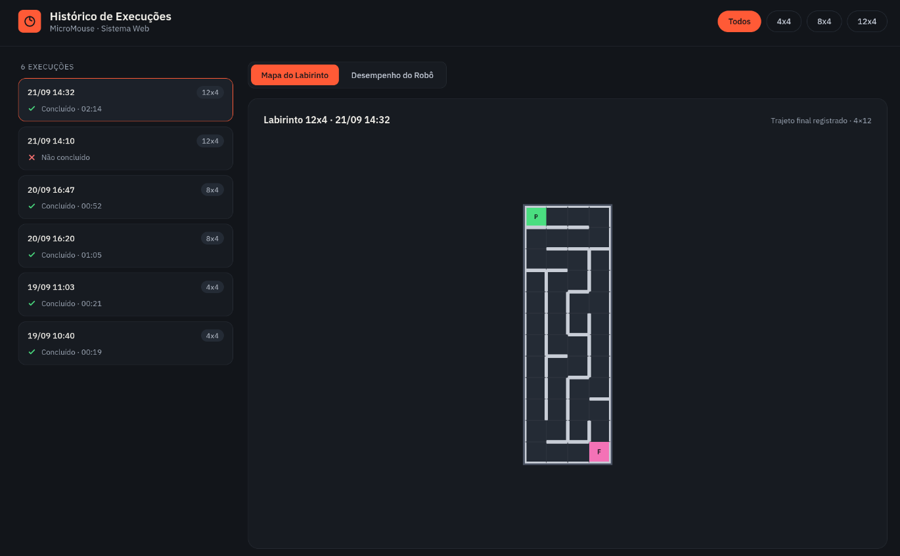
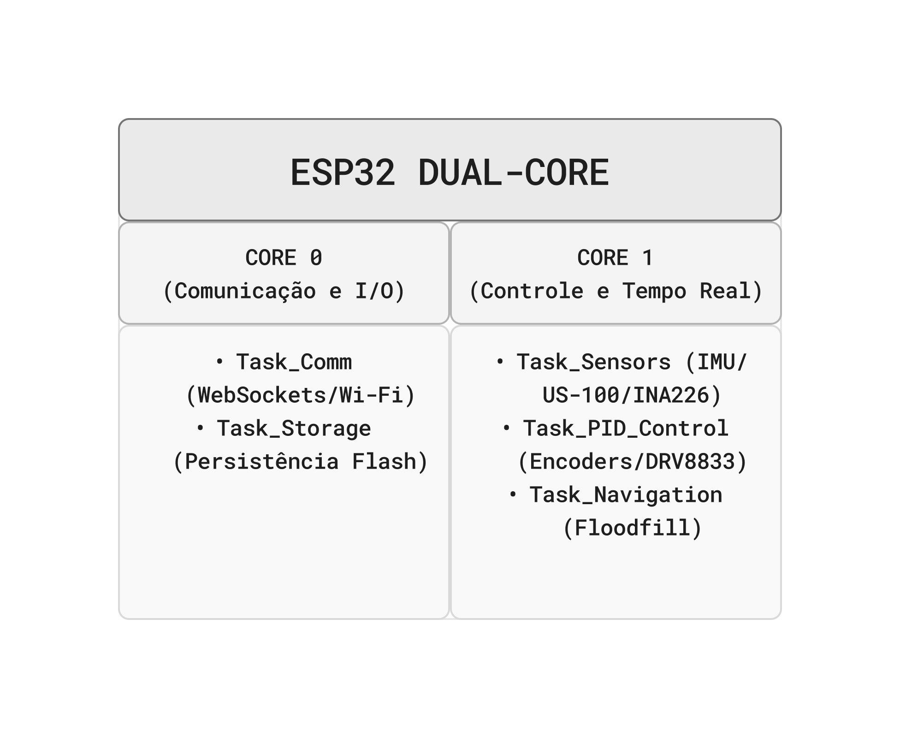

Projeto Conceitual de Software¶
Diagrama de Atividades¶
O diagrama abaixo descreve o fluxo de comportamento funcional do MicroMouse durante uma corrida, desde o início da execução até a chegada ao objetivo, evidenciando os três atores envolvidos (raias/swimlanes): o Robô (firmware embarcado), o Servidor (sistema web de telemetria + banco de dados) e o Usuário (que acompanha a corrida pelo dashboard).

Diagrama de Atividades no Figma¶
Leitura do fluxo:
- Entradas: Leituras dos sensores de distância a cada célula percorrida e calibração inicial do sistema.
- Atividades do Robô: Inicialização do sistema, mapeamento e atualização da localização do robô, decisão do próximo movimento e execução da navegação.
- Ponto de decisão: "Atingiu a saída?" separa o ciclo de navegação e tomada de decisão da etapa de encerramento da corrida.
- Sincronização e Paralelismo: A cada movimento executado, o robô dispara em segundo plano a transmissão de dados de telemetria para a Plataforma Web, mantendo o laço de navegação ativo de forma paralela.
- Atividades da Plataforma Web: Recebimento dos pacotes de telemetria, salvamento dos dados no banco de dados e atualização da interface do dashboard em tempo real.
- Atividades do Usuário: Acompanhamento da corrida ao vivo no dashboard e análise do relatório final de desempenho ao término do percurso.
- Saídas: Dados da corrida armazenados localmente no MicroMouse, histórico completo persistido no banco de dados e relatório exibido no dashboard web.
Épicos e Historias de Usuários¶
RF01/Épico-01: Mapear Labirinto¶
| ID (Link Github Projects) | Título | Prioridade |
|---|---|---|
| HU-00 | Construção contínua do mapa interno do labirinto | Must |
| HU-01 | Detecção e medição de proximidade de paredes | Must |
HU-00 — Construção contínua do mapa interno do labirinto¶
Eu, como Operador da Equipe, gostaria que o MicroMouse construa e atualize continuamente um mapa interno do labirinto à medida que se desloca, para que ele identifique caminhos livres, paredes e becos sem saída de forma autônoma, permitindo a navegação sem intervenção humana.
Critérios de aceitação: - Para cada célula visitada, o robô registra quais das 4 paredes foram identificadas. - O mapa interno é atualizado célula a célula, em tempo real, sem necessidade de reiniciar a exploração. - Ao final do trajeto (com sucesso ou não), o mapa interno reflete corretamente a estrutura de paredes percebida pelos sensores até aquele ponto. - O mapa interno pode ser recuperado/consultado pelo sistema para ser transmitido e exibido no sistema web.
Protótipo de interface: Não se aplica.
HU-01 — Detecção e medição de proximidade de paredes¶
Eu, como Operador da Equipe, gostaria que o sistema de sensores do MicroMouse detecte a presença e meça a distância das paredes adjacentes (frente, esquerda e direita), para que o robô possa evitar colisões, manter-se perfeitamente alinhado no centro do corredor e fornecer os dados estruturais necessários para o algoritmo de mapeamento.
Critérios de aceitação:
- O sistema deve realizar a leitura contínua dos sensores direcionais para identificar, de forma binária, a existência ou não de paredes à frente, à esquerda e à direita da célula atual.
- O hardware deve retornar valores numéricos de distância confiáveis para as paredes laterais detectadas, permitindo que a rotina de controle faça correções finas de alinhamento nos motores.
- A taxa de atualização dos sensores deve ser alta o suficiente para processar a proximidade em tempo real, garantindo que o robô freie ou desvie antes de qualquer colisão, mesmo em velocidade máxima.
- Caso a leitura do sensor retorne um valor maior que a largura padrão do corredor do labirinto (ausência de parede), o sistema deve registrar e validar a direção como um "caminho livre" para o mapeamento.
Protótipo de interface: Não se aplica.
RF02/Épico-02: Monitorar Localização¶
| ID (Link Github Projects) | Título | Prioridade |
|---|---|---|
| HU-02 | Rastreamento da posição do robô na grade | Should |
HU-02 — Rastreamento da posição do robô na grade¶
Eu, como Operador da Equipe, gostaria que o MicroMouse acompanhe e atualize sua posição exata (linha/coluna) dentro da grade do labirinto a cada movimento realizado, para que o algoritmo de navegação (HU-03) e os dados exibidos em tempo real (HU-08 e HU-09) estejam sempre corretos.
Critérios de aceitação: - Após cada movimento (avanço ou giro), a posição interna do robô é recalculada corretamente. - A posição atual pode ser consultada e transmitida para exibição em tempo real (HU-10 e HU-08). - O robô nunca perde a referência da célula em que está durante uma tentativa válida (sem colisão/mau funcionamento).
Protótipo de interface: Não se aplica.
RF03/Épico-03: Navegar labirinto¶
| ID (Link Github Projects) | Título | Prioridade |
|---|---|---|
| HU-03 | Resolução autônoma do labirinto até o objetivo | Must |
| HU-04 | Rotação no próprio eixo para mudança de direção | Must |
| HU-05 | Deslocamento linear entre as células do labirinto | Must |
| HU-06 | Identificação dos pontos de partida e objetivo do labirinto | Must |
HU-03 — Resolução autônoma do labirinto até o objetivo¶
Eu, como Operador da Equipe, gostaria que o MicroMouse execute autonomamente algoritmos de busca e tomada de decisão para percorrer o labirinto, desde o ponto de partida até a área de objetivo, sem intervenção humana, para que a equipe cumpra o desafio da competição dentro das regras do desafio.
Critérios de aceitação: - O robô inicia sempre no beco sem saída do canto de partida e para ao alcançar a célula de objetivo (canto diametralmente oposto). - Nenhuma intervenção humana ocorre durante a resolução, exceto em caso de mau funcionamento ou colisão (conforme permitido pelas regras do desafio). - O robô detecta corretamente quando alcançou a área de objetivo e encerra a tentativa. - O algoritmo é capaz de resolver os três tipos de labirinto da competição (4x4, 8x4 e 12x4) dentro do limite de até 3 tentativas e 10 minutos por desafio. - O código e a memória sobre o labirinto não são alterados manualmente durante a resolução do trajeto (regra do desafio).
Protótipo de interface: Não se aplica.
HU-04 — Rotação no próprio eixo para mudança de direção¶
Eu, como Operador da Equipe, gostaria que o sistema de tração do MicroMouse execute rotações precisas de até 180° em torno do seu próprio eixo geométrico, para que ele possa mudar de direção em cruzamentos (90° à esquerda ou à direita) e retornar em becos sem saída (180°) de forma ágil, sem encostar nas paredes laterais.
Critérios de aceitação:
- O robô deve utilizar tração diferencial (girar uma roda para frente e a outra para trás na mesma proporção) para garantir que o raio de giro seja zero, rotacionando exatamente sobre o seu centro.
- O sistema de controle deve garantir o ângulo exato da rotação, compensando a inércia para que o robô termine o movimento perfeitamente alinhado ao novo corredor.
- Após concluir a rotação, a estrutura física do robô deve permanecer contida dentro dos limites da célula atual do labirinto.
- O movimento deve evitar acelerações bruscas que causem derrapagem (perda de tração), garantindo que a odometria do robô não perca a referência de sua posição no mapa.
Protótipo de interface: Não se aplica.
HU-05 — Deslocamento linear entre as células do labirinto¶
Eu, como Operador da Equipe, gostaria que o MicroMouse realize deslocamentos lineares (para a frente e para trás) com controle de aceleração e velocidade, para que ele transite de forma segura entre as células do labirinto, mantendo uma trajetória quase perfeitamente reta até o centro da próxima célula.
Critérios de aceitação:
- O robô deve avançar a distância exata correspondente a uma célula padrão do labirinto utilizando os encoders acoplados aos motores como referência de distância percorrida.
- A rotina de controle PID deve atuar continuamente durante o deslocamento linear, sincronizando as duas rodas para compensar desvios e manter o robô centralizado, utilizando dados dos sensores laterais.
- O hardware e o software devem suportar a reversão da polaridade/sinal dos motores para executar deslocamentos em marcha à ré de forma controlada, caso um ajuste fino de posicionamento seja necessário.
- A velocidade de deslocamento deve respeitar uma rampa de aceleração e desaceleração, garantindo uma frenagem suave ao atingir o centro da célula de destino.
Protótipo de interface: Não se aplica.
HU-06 — Identificação dos pontos de partida e objetivo do labirinto¶
Eu, como Operador da Equipe, gostaria que o sistema de navegação e mapeamento do MicroMouse consiga identificar de forma autônoma a célula inicial (ponto de partida) e a área de objetivo (canto diametralmente oposto ao ponto de partida), para que o robô saiba quando iniciar o modo de exploração e pare ao alcançar o objetivo.
Critérios de aceitação:
- Ao ser inicializado fisicamente na arena, o robô deve registrar automaticamente a célula atual como a coordenada de origem em seu mapa interno, definindo-a como a base para o início do mapeamento e ponto de retorno seguro.
- O algoritmo deve identificar a área de objetivo como a célula do canto diametralmente oposto à origem, calculada a partir da posição do robô (HU-02) e do tipo de labirinto configurado (4x4, 8x4 ou 12x4).
- Ao alcançar a célula de objetivo, o robô deve interromper a lógica de exploração contínua e parar os motores de forma segura no centro da célula.
- Imediatamente após confirmar a chegada, o sistema deve salvar as coordenadas finais no mapa.
Protótipo de interface: Não se aplica.
RF04/Épico-04: Realizar telemetria¶
| ID (Link Github Projects) | Título | Prioridade |
|---|---|---|
| HU-07 | Coleta contínua de métricas de operação | Must |
HU-07 — Coleta contínua de métricas de operação¶
Eu, como Operador da Equipe, gostaria que o MicroMouse colete e transmita continuamente métricas de operação (velocidade, tempo decorrido, consumo de bateria e status do desafio) para a central de controle, para que seja possível o acompanhamento contínuo do desempenho do robô durante a corrida.
Critérios de aceitação: - As métricas coletadas incluem, no mínimo: velocidade instantânea/média, tempo decorrido, percentual de bateria consumida, tipo do labirinto (4x4, 8x4 ou 12x4) e status da tentativa (em andamento / concluída / falha), a partir do qual se informa se o desafio foi cumprido (S/N). - As métricas são transmitidas junto com os demais dados de telemetria (HU-10), em intervalo regular definido pela equipe. - As métricas coletadas ficam disponíveis para exibição em tempo real em tempo real no painel da corrida (HU-08 e HU-09) e, após a corrida, no histórico (HU-11 e HU-17).
Protótipo de interface: Não se aplica.
RF05/Épico-05: Gerenciar dados¶
| ID (Link Github Projects) | Título | Prioridade |
|---|---|---|
| HU-08 | Exibição dos dados estruturais e do mapa do labirinto | Must |
| HU-09 | Exibição das informações de status e telemetria do robô | Must |
| HU-10 | Transmissão de dados de bordo para o dashboard | Must |
| HU-11 | Armazenamento das informações de navegação | Must |
| HU-12 | Histórico de sessões, eventos e diagnósticos | Should |
| HU-17 | Consulta dos dados finais por labirinto | Must |
HU-08 — Exibição dos dados estruturais e do mapa do labirinto¶
Eu, como Operador da Equipe, gostaria que o dashboard exiba uma representação gráfica bidimensional e atualizada do mapa do labirinto, para que eu possa acompanhar visualmente o progresso da exploração, validando se o robô identificou corretamente as paredes, caminhos livres e a sua posição atual.
Critérios de aceitação:
- A interface deve renderizar uma grade compatível com as dimensões oficiais do labirinto (4x4, 8x4 ou 12x4).
- As paredes recém-descobertas pelo robô devem aparecer no mapa em tempo real à medida que os dados são recebidos.
- A célula onde o robô se encontra no momento deve ser destacada visualmente.
- O mapa deve diferenciar células inexploradas daquelas que já foram visitadas.
- O trajeto percorrido pelo robô deve ser destacado no mapa.
Protótipo de interface:

HU-09 — Exibição das informações de status e telemetria do robô¶
Eu, como Analista da Equipe, gostaria que o painel exiba indicadores críticos de hardware e software em tempo real (como tensão da bateria, velocidade, leituras brutas de sensor e modo de operação), para que eu possa monitorar a saúde do sistema durante a corrida e tomar decisões precisas sobre calibração e manutenção.
Critérios de aceitação:
- O dashboard deve apresentar o nível de tensão da bateria, emitindo um alerta visual caso a voltagem caia abaixo de um limite seguro (evitando danos à bateria).
- Os valores atuais de erro do controle PID e as velocidades das rodas (odometria) devem ser exibidos de forma contínua.
- O estado lógico atual do robô (ex: "Mapeando", "Retornando", "Parado por Erro") deve estar visível e em destaque.
Protótipo de interface:

HU-10 — Transmissão de dados de bordo para o dashboard¶
Eu, como Analista da Equipe, gostaria de que fossem transmitidos pacotes compactados de telemetria e atualizações de mapa via conexão sem fio, para que a interface de controle seja alimentada com dados contínuos sem que isso cause travamentos ou atrasos no processamento crítico de navegação (PID e leitura de sensores).
Critérios de aceitação:
- A rotina de envio de dados deve ser executada de forma assíncrona ou em uma thread separada, garantindo que não afete a taxa de atualização dos motores.
- Os pacotes de dados devem ser enviados em um formato estruturado e leve como JSON ou buffers binários.
- O sistema deve lidar com perdas momentâneas de sinal, reconectando-se automaticamente e descartando/reenviando pacotes defasados sem travar o microcontrolador.
Protótipo de interface: Não se aplica.
HU-11 — Armazenamento das informações de navegação¶
Eu, como Analista da Equipe, gostaria que o sistema salve localmente ou no banco de dados do dashboard as coordenadas de percurso, tempos e rotas geradas, para que seja possível realizar uma análise detalhada pós-corrida e aprimorar os algoritmos de aceleração e trajetória.
Critérios de aceitação:
- Ao final de cada execução, o tempo total da rota (da largada à chegada) deve ser gravado e associado àquela sessão específica.
- O tipo do labirinto, o número da tentativa e o status final (desafio cumprido S/N) são gravados junto com a sessão.
- A sequência de coordenadas do percurso e o consumo de bateria da execução ficam associados à mesma sessão e podem ser recuperados após a corrida.
Protótipo de interface: Não se aplica.
HU-12 — Histórico de sessões, eventos e diagnósticos¶
Eu, como Desenvolvedor de Software, gostaria que o sistema mantenha um log cronológico de eventos e erros registrados durante as sessões de funcionamento, para que eu consiga realizar um diagnóstico (debug) eficiente de falhas sistêmicas que tenham ocorrido enquanto o robô operava de forma autônoma na pista.
Critérios de aceitação:
- O sistema deve registrar eventos importantes com seus respectivos "timestamps".
- As mensagens devem ser categorizadas por nível de severidade (ex:
INFOpara mudanças de estado,WARNINGpara derrapagens identificadas,ERRORpara falhas de comunicação ou colisão física). - A interface web/dashboard deve possuir uma aba dedicada para a consulta e filtragem do histórico das sessões passadas.
Protótipo de interface:

RF06/Épico-06: Interromper motores¶
| ID (Link Github Projects) | Título | Prioridade |
|---|---|---|
| HU-13 | Interromper alimentação dos motores | Must |
| HU-14 | Parada de segurança por falha de software / Watchdog | Must |
HU-13 — Interrupção da alimentação dos motores¶
Eu, como Operador da Equipe, gostaria que o sistema corte imediatamente os sinais de controle (PWM) e a alimentação elétrica direcionada aos drivers dos motores, para que o robô freie de forma segura ao concluir a meta do labirinto, ao receber um comando de parada ou ao detectar uma falha crítica (como travamento das rodas ou colisão iminente).
Critérios de aceitação:
- O sistema de controle deve ser capaz de enviar um comando de parada instantânea (Duty Cycle de 0% no PWM) para a ponte H / driver de motor assim que a condição de chegada ou falha for acionada.
- Em caso de falha de software, deve haver um mecanismo físico de segurança que garanta a desenergização da tração.
- A interrupção dos motores não deve desligar os sensores ou a placa lógica, permitindo que o robô continue transmitindo dados de telemetria e o log do erro ocorrido.
Protótipo de interface: Não se aplica.
HU-14 — Parada de segurança por falha de software / Watchdog¶
Eu, como Operador da Equipe, gostaria que o MicroMouse utilize um temporizador de segurança independente (Watchdog Timer), para que os sinais de controle dos motores sejam zerados automaticamente na eventualidade do software travar ou entrar em um loop infinito, impedindo que o robô acelere de forma cega e descontrolada.
Critérios de aceitação:
- O Watchdog Timer (WDT) deve ser inicializado pelo hardware com um tempo limite curto e agressivo (ex: 100ms a 200ms).
- A rotina principal de navegação deve "alimentar" (resetar) o WDT a cada ciclo de controle concluído com sucesso.
- Em caso de travamento do código (estouro do tempo do WDT), a interrupção gerada no hardware deve, antes de reiniciar o microcontrolador, forçar os pinos de saída PWM das pontes H para nível lógico baixo (0V).
Protótipo de interface: Não se aplica.
RF07/Épico-07: Controlar rotinas¶
| ID (Link Github Projects) | Título | Prioridade |
|---|---|---|
| HU-15 | Controlar rotinas de inicialização e calibração | Must |
| HU-16 | Encerramento seguro e salvamento de estado | Should |
HU-15 — Controle das rotinas de inicialização e calibração¶
Eu, como Operador da Equipe, gostaria de utilizar botões físicos no chassi e digitais no dashboard do robô para iniciar ou desligar as rotinas principais e acionar o processo de calibração dos sensores antes da largada, para que o controle de navegação (PID) obtenha as leituras de referência exatas (como o offset do giroscópio e as distâncias base) e o robô inicie o mapeamento de forma estável, sem movimentos acidentais ao ser ligado.
Critérios de aceitação:
- A placa de circuito impresso deve possuir botões físicos acessíveis que sejam lidos pelo microcontrolador.
- Ao pressionar o botão de calibração, o robô deve permanecer com os motores travados (desligados) enquanto realiza múltiplas leituras dos sensores para calcular a média e eliminar ruídos de leitura.
- O robô deve fornecer um feedback visual (ex: acender uma sequência de LEDs) ou sonoro (buzzer) para informar ao operador que a calibração foi concluída com sucesso e que a rotina de controle está pronta para iniciar a movimentação.
- O desligamento da rotina de controle por meio de botão físico ou digital deve parar imediatamente o processamento de navegação.
Protótipo de interface: Não se aplica.
HU-16 — Encerramento seguro e salvamento de estado¶
Eu, como Analista da Equipe, gostaria que o MicroMouse execute uma rotina de encerramento controlado (Graceful Shutdown) ao receber o comando de parada, para que o mapa topológico gerado durante a exploração seja salvo de forma íntegra na memória não-volátil antes do sistema ser totalmente desativado.
Critérios de aceitação:
- Ao acionar o botão de parada ou ao detectar a chegada, a prioridade máxima é desenergizar os motores, mas o microcontrolador deve permanecer ativo para processar o encerramento.
- A rotina deve validar a matriz do mapa e gravá-la na memória persistente, garantindo que os dados do labirinto sobrevivam ao desligamento total da bateria.
- Após o salvamento bem-sucedido, o sistema deve emitir um feedback claro (ex: LED verde contínuo ou bipe longo) indicando que o desligamento físico geral agora é seguro e que não haverá corrupção de dados.
Protótipo de interface: Não se aplica.
Rastreabilidade¶
| HU | RF | RNFs |
|---|---|---|
| HU-00 | RF01 | RNF04, RNF07 |
| HU-01 | RF01 | RNF04, RNF05, RNF09, RNF20 |
| HU-02 | RF02 | RNF04, RNF18 |
| HU-03 | RF03 | RNF02, RNF07 |
| HU-04 | RF03 | RNF04, RNF12, RNF15, RNF18 |
| HU-05 | RF03 | RNF04, RNF05, RNF15, RNF18, RNF19 |
| HU-06 | RF03 | RNF07 |
| HU-07 | RF04 | RNF11 |
| HU-08 | RF05 | RNF11 |
| HU-09 | RF05 | RNF11 |
| HU-10 | RF05 | RNF11 |
| HU-11 | RF05 | RNF01 |
| HU-12 | RF05 | RNF01 |
| HU-13 | RF06 | RNF05, RNF06, RNF13 |
| HU-14 | RF06 | RNF05, RNF06, RNF13 |
| HU-15 | RF07 | RNF09 |
| HU-16 | RF07 | RNF01 |
Arquitetura de Software: Solução MicroMouse¶
Este documento apresenta a especificação arquitetural do sistema embarcado e da central de monitoramento para o robô MicroMouse, estruturado de acordo com o modelo de Visões Arquiteturais (4+1) do Processo Unificado (UP). Em conformidade com as diretrizes do projeto, a tradicional Visão de Casos de Uso foi substituída pela Visão de Dados.
1. Visão Geral e Propósito do Software¶
1.1 Propósito do Software¶
O software possui o papel de atuar como o sistema de controle autônomo e telemetria de bordo do robô MicroMouse. Ele é responsável por:
-
Processar sinais de sensores em tempo real para identificação de paredes, localização e orientação.
-
Executar algoritmos de navegação e mapeamento dinâmico do labirinto.
-
Controlar os atuadores (motores via controle PID e odometria) para movimentação precisa.
-
Persistir e transmitir dados de telemetria, logs de execução e a topologia do labirinto para uma central de controle via Wi-Fi em tempo real.
2. Visão Lógica¶
A Visão Lógica descreve a organização conceitual e a estruturação das classes e módulos do sistema.
2.1 Padrões Arquiteturais Adotados e Justificativa¶
-
Firmware Embarcado (Robô): Arquitetura em Camadas (Layered Architecture) orientada a Eventos/Tarefas.
- Justificativa: O software de bordo lida diretamente com o hardware do microcontrolador ESP32. A divisão em camadas garante o desacoplamento entre os drivers de baixo nível (I2C, PWM, GPIO), a lógica de controle PID/Navegação e a camada de comunicação de alto nível.
-
Dashboard (Central de Controle): Padrão MVC (Model-View-Controller).
- Justificativa: Permite a separação entre a interface visual que renderiza o labirinto e métricas do robô (View), os serviços que processam as mensagens WebSockets recebidas (Controller) e os modelos de dados da sessão e estado (Model).
2.2 Divisão em Módulos do Sistema¶
-
1.Módulo HAL / Drivers de Hardware (Baixo Nível):
-
Driver IMU (MPU6500): Leitura do giroscópio e acelerômetro via I2C para estimativa de orientação.
-
Driver Ultrassônico (US-100): Leitura contínua da distância de paredes via UART/GPIO.
-
Driver Ponte H (DRV8833): Controle PWM para acionamento dos motores N20.
-
Driver de Odometria (Encoders N20): Contagem de pulsos por interrupção para cálculo de deslocamento.
-
Driver de Potência (INA226): Monitoramento de tensão e corrente da bateria via I2C.
-
-
2. Módulo de Controle e Navegação (Médio Nível):
-
Malha de Controle PID: Mantém o robô centralizado e estabilizado durante a locomoção.
-
Mapeador e Buscador (Floodfill): Atualiza a matriz do labirinto e calcula as ações de rotação e avanço.
-
-
3. Módulo de Comunicação e Armazenamento (Alto Nível):
-
Gerenciador NVS/Flash: Armazena configurações e histórico de logs localmente.
-
Servidor WebSockets/Wi-Fi: Transmite a telemetria do robô e atualizações do mapa.
-
3. Visão de Processos¶
A Visão de Processos trata da concorrência, tempo real e distribuição do processamento entre as tarefas do sistema.
O microcontrolador ESP32 conta com dois núcleos de processamento (Core 0 e Core 1) e executa o sistema operacional de tempo real FreeRTOS. As tarefas (Tasks) são distribuídas entre os núcleos para garantir resposta imediata aos sensores sem bloquear as rotinas de comunicação:

-
Processo 1:
Task_Sensors(Periódico - 10ms | Prioridade Alta):- Executa a amostragem do giroscópio MPU6500 e a leitura dos 4 sensores US-100 para identificação imediata de obstáculos/paredes.
-
Processo 2:
Task_PID_Control(Periódico - 5ms | Prioridade Máxima):- Processa interrupções dos leitores de encoder dos motores N20, calcula os erros de trajetória e atualiza o ciclo de trabalho PWM da ponte H DRV8833.
-
Processo 3:
Task_Navigation(Baseado em Eventos | Prioridade Média):- Disparada quando o robô alcança o centro de uma célula. Executa a lógica de atualização da grade de navegação e decide a próxima direção.
-
Processo 4:
Task_Comm(Assíncrono | Prioridade Baixa):- Formata os dados no formato JSON e envia pacotes de telemetria e o estado do labirinto para a central de controle via WebSockets.
4. Visão de Implementação¶
A Visão de Implementação especifica as tecnologias, linguagens, frameworks e bibliotecas escolhidas para a solução.
4.1 Tecnologias Adotadas¶
| Camada | Tecnologia / Linguagem | Frameworks e Bibliotecas | Justificativa |
|---|---|---|---|
| Firmware (Embarcado) | C++ / C |
FreeRTOS, Arduino ESP32 Core, Wire.h (I2C), ESPAsyncWebServer, ArduinoJson |
Permite controle rigoroso de baixo nível, acesso direto aos registradores e periféricos da ESP32 com altíssimo desempenho de tempo real. |
| Dashbord (Backend/Server) | TypeScript / Node.js | Express.js, ws (WebSockets), TypeORM / Prisma |
Plataforma leve e eficiente em I/O assíncrono para manipulação da transmissão contínua de dados de telemetria. |
| Dashbord (Frontend/Dashboard) | TypeScript / JavaScript | React.js, TailwindCSS, Chart.js, HTML5 Canvas API | Permite renderização fluida da grade do labirinto em tempo real e atualização gráfica das métricas do robô. |
5. Visão de Implantação¶
A Visão de Implantação descreve a arquitetura física e a topologia de hardware da solução.

Componentes de Hardware Utilizados e Conexões:¶
-
ESP32 DevKit V1 30 Pinos: Unidade Central de Processamento.
-
Ponte H DRV8833: Conectada às saídas PWM da ESP32 para controle bidirecional dos Motores N20-6V.
-
2x Motores N20 com Encoders: Conectados a pino de interrupção da ESP32 para feedback de malha fechada.
-
3x Sensores Ultrassônicos US-100: Dispostos nas posições frontal, esquerda e direita para mapeamento de paredes.
-
IMU MPU6500: Conectado via barramento I2C para estimativa de ângulo e giros precisos de 180°.
-
Sensor INA226: Conectado via I2C para leitura de corrente e tensão da bateria.
-
Regulador Buck MP1584: Regula a tensão de alimentação dos módulos lógicos.
6. Visão de Dados¶
A Visão de Dados descreve a modelagem e a estrutura de persistência das informações manipuladas e gravadas pelo sistema.
6.1 Escolha da Tecnologia de Banco de Dados: Relacional (SQLite / PostgreSQL)¶
-
Justificativa: Os dados manipulados pelo sistema possuem um alto grau de estruturação e esquemas rígidos (ex: coordenadas $X,Y$ fixas em uma matriz, leituras periódicas de telemetria vinculadas a uma sessão de execução e registros tabulares de erros).
-
No Dashbord, adota-se um Banco de Dados Relacional (SQLite para execução local simples ou PostgreSQL para diagnósticos avançados).
-
No Robô (ESP32), utiliza-se a memória Flash interna (via biblioteca
Preferencesou sistema de arquivosLittleFS) configurada estruturalmente em formato relacional/tabelar binário para armazenamento offline caso ocorra perda do link Wi-Fi.
6.2 Modelo Entidade-Relacionamento (MER)¶
Entidades e Atributos:¶
-
SESSAO_NAVEGACAO:
-
id_sessao(PK, Inteiro): Identificador único do percurso. -
data_inicio(DateTime): Registro do momento do início da corrida. -
status_conclusao(Texto): Status do percurso (Em andamento, Concluído, Interrompido por Falha). -
tempo_total_segundos(Float): Tempo transcorrido até o reconhecimento da linha de chegada. -
CELULA_LABIRINTO:
-
id_celula(PK, Inteiro): Identificador da célula. -
id_sessao(FK, Inteiro): Referência à sessão atual. -
pos_x(Inteiro): Coordenada $X$ da célula na grade do labirinto. -
pos_y(Inteiro): Coordenada $Y$ da célula na grade do labirinto. -
parede_norte(Booleano): Presença de parede ao Norte. -
parede_sul(Booleano): Presença de parede ao Sul. -
parede_leste(Booleano): Presença de parede ao Leste. -
parede_oeste(Booleano): Presença de parede ao Oeste. -
visitada(Booleano): Flag indicando se o robô passou pela célula. -
REGISTRO_TELEMETRIA:
-
id_telemetria(PK, BigInt): Identificador único da amostra. -
id_sessao(FK, Inteiro): Sessão associada. -
timestamp_ms(BigInt): Milissegundos transcorridos desde o boot. -
tensao_bateria(Float): Leitura do sensor INA226 em Volts. -
corrente_bateria(Float): Leitura do sensor INA226 em Amperes. -
velocidade_esq(Float): Velocidade calculada do motor esquerdo em mm/s. -
velocidade_dir(Float): Velocidade calculada do motor direito em mm/s. -
angulo_orientacao(Float): Leitura de orientação Yaw da IMU MPU6500. -
LOG_EVENTO:
-
id_log(PK, Inteiro): Identificador do registro. -
id_sessao(FK, Inteiro): Sessão associada. -
timestamp_ms(BigInt): Horário do evento. -
tipo_evento(Texto): Categoria (INFO, WARN, ERROR, SUCCESS). -
descricao(Texto): Detalhamento do evento (ex: "Linha de Chegada Reconhecida", "Motores Interrompidos").
Relacionamentos e Cardinalidades:¶
-
Uma SESSAO_NAVEGACAO possui $1:N$ CELULA_LABIRINTO (Uma sessão gera o mapeamento de várias células do labirinto).
-
Uma SESSAO_NAVEGACAO possui $1:N$ REGISTRO_TELEMETRIA (Uma sessão coleta continuadamente múltiplos pacotes de telemetria).
-
Uma SESSAO_NAVEGACAO possui $1:N$ LOG_EVENTO (Uma sessão registra diversos logs operacionais).
6.3 Diagrama Entidade-Relacionamento (DER)¶
erDiagram
SESSAO_NAVEGACAO ||--|{ CELULA_LABIRINTO : "mapeia"
SESSAO_NAVEGACAO ||--|{ REGISTRO_TELEMETRIA : "registra"
SESSAO_NAVEGACAO ||--|{ LOG_EVENTO : "gera"
SESSAO_NAVEGACAO {
int id_sessao PK
datetime data_inicio
string status_conclusao
float tempo_total_segundos
}
CELULA_LABIRINTO {
int id_celula PK
int id_sessao FK
int pos_x
int pos_y
boolean parede_norte
boolean parede_sul
boolean parede_leste
boolean parede_oeste
boolean visitada
}
REGISTRO_TELEMETRIA {
bigint id_telemetria PK
int id_sessao FK
bigint timestamp_ms
float tensao_bateria
float corrente_bateria
float velocidade_esq
float velocidade_dir
float angulo_orientacao
}
LOG_EVENTO {
int id_log PK
int id_sessao FK
bigint timestamp_ms
string tipo_evento
string descricao
}
Roteiro de testes funcionais¶
Para garantir a cobertura das principais funcionalidades do seu MicroMouse descritas no "backlog-mvp.md", estruturei o roteiro abaixo focando nos fluxos críticos de hardware e software: percepção, navegação autônoma, telemetria, segurança e calibração.
CT-01: Validação de Detecção de Paredes e Atualização do Mapa¶
- Código do caso de teste: CT-01
- Nome do caso de teste: Detecção e Mapeamento Contínuo
-
Rastreabilidade: RF01 (HU-00, HU-01)
-
Objetivo do caso de teste: Validar se o robô identifica corretamente as paredes adjacentes e se o mapa interno reflete essa estrutura célula a célula de forma contínua.
-
Pré-condições: Robô posicionado na célula inicial de um labirinto físico de teste. Sensores de proximidade ativos e hardware energizado.
-
Procedimentos:
- Iniciar o modo de exploração do robô em um trecho contendo caminhos livres, paredes laterais e um beco sem saída.
- Acompanhar a leitura contínua dos sensores direcionais nas posições frente, esquerda e direita.
- Interromper fisicamente o robô após 5 células exploradas e consultar a matriz do mapa interno gerado.
- Resultado esperado:
- Os sensores retornam valores numéricos confiáveis para as laterais e leituras binárias indicando ausência ou presença de paredes.
- Direções com distância maior que a largura do corredor são validadas como "caminhos livres".
- O mapa interno reflete a estrutura exata do trajeto percorrido sem necessidade de reiniciar a exploração.
CT-02: Navegação Autônoma, Rotação e Identificação do Objetivo¶
- Código do caso de teste: CT-02
- Nome do caso de teste: Resolução Autônoma do Labirinto
- Rastreabilidade: RF03 (HU-03, HU-04, HU-05, HU-06)
- Objetivo do caso de teste: Garantir que a lógica de controle PID, a tração diferencial e a identificação do objetivo atuem em conjunto para resolver o labirinto.
- Pré-condições: Robô localizado no beco sem saída do canto de partida (origem) de um labirinto padrão (4x4, 8x4 ou 12x4).
- Procedimentos:
- Dar a partida no robô sem realizar intervenções manuais subsequentes.
- Observar um deslocamento linear completo entre duas células e uma manobra de rotação de 180° em um beco sem saída.
- Aguardar o robô alcançar o centro geográfico do labirinto (área de objetivo).
- Resultado esperado:
- A rotação ocorre exatamente sobre o centro geométrico do robô (raio zero), mantendo-o contido nos limites da célula.
- O avanço linear respeita rampas de aceleração e é corrigido lateralmente pelo PID.
- Ao cruzar a zona de chegada, o robô interrompe a exploração, para os motores no centro da célula de destino e salva as coordenadas finais.
CT-03: Transmissão de Telemetria e Renderização no Dashboard¶
- Código do caso de teste: CT-03
- Nome do caso de teste: Telemetria e Interface de Controle
- Rastreabilidade: RF04 (HU-07), RF05 (HU-08, HU-09, HU-10)
- Objetivo do caso de teste: Verificar se o sistema envia dados operacionais assincronamente e se o dashboard exibe essas métricas e o mapa atualizado.
- Pré-condições: Conexão sem fio estabelecida entre o robô e o painel. Robô executando percurso na arena.
- Procedimentos:
- Iniciar o monitoramento via dashboard web simultaneamente à exploração do robô.
- Conferir os indicadores críticos de hardware durante a execução (tensão da bateria, velocidade e erros PID).
-
Observar a grade bidimensional renderizada na interface à medida que novos dados chegam.
-
Resultado esperado:
- Pacotes (JSON ou binários) são transmitidos sem prejudicar a atualização dos motores.
- O painel emite alertas visuais para quedas de voltagem e exibe o estado lógico atual (ex: "Mapeando").
- O mapa diferencia visualmente as células inexploradas, as já visitadas e destaca a posição atual do robô em tempo real.
CT-04: Atuação do Watchdog e Parada de Segurança¶
- Código do caso de teste: CT-04
- Nome do caso de teste: Desenergização por Falha de Software (Watchdog)
- Rastreabilidade: RF06 (HU-13, HU-14)
- Objetivo do caso de teste: Confirmar o corte da alimentação de tração para prevenir acelerações descontroladas em caso de travamento do sistema.
- Pré-condições: Robô operando na pista. Watchdog Timer (WDT) configurado com limite de 100ms a 200ms.
- Procedimentos:
- Iniciar um deslocamento linear padrão na pista.
- Simular um loop infinito ou travamento intencional no código principal de navegação para impedir a alimentação (reset) do WDT.
-
Avaliar o comportamento das rodas e das transmissões de rede após a injeção da falha.
-
Resultado esperado:
- O WDT estoura e força os pinos PWM das pontes H para nível lógico baixo (0V), enviando um comando de parada instantânea (Duty Cycle 0%).
- Os motores são totalmente desenergizados de forma segura.
- A placa lógica e os sensores não são desligados, permitindo que o robô transmita o log do erro de travamento ocorrido.
CT-05: Calibração Inicial e Encerramento Seguro (Graceful Shutdown)¶
- Código do caso de teste: CT-05
- Nome do caso de teste: Setup de Partida e Salvamento de Estado
- Rastreabilidade: RF07 (HU-15, HU-16)
- Objetivo do caso de teste: Validar se a estabilidade é garantida na inicialização via botões físicos e se o mapa não é corrompido ao desligar.
- Pré-condições: Sistema posicionado na arena com a bateria energizada, mas sistema lógico aguardando calibração. Memória persistente pronta para gravação.
- Procedimentos:
- Pressionar o botão físico de calibração localizado na placa de circuito impresso do chassi.
- Após o feedback de sucesso, iniciar um movimento curto e acionar o comando de parada / botão de encerramento controlado.
-
Desligar fisicamente a bateria após o aviso do sistema e religá-la para conferir o mapa.
-
Resultado esperado:
- Durante a leitura para média dos sensores, os motores permanecem estritamente travados e desligados.
- Um LED ou buzzer confirma o fim da calibração.
- Ao acionar o encerramento, a matriz do mapa é salva integralmente na memória não-volátil, emitindo um feedback (LED verde ou bipe longo) indicando que o desligamento total agora é seguro.